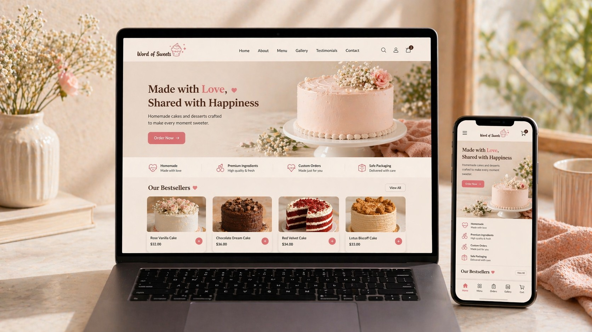

Education Consultancy Platform
UK Education Pathway
A consultancy website designed to communicate services clearly, build trust, and improve the user journey for students and families.
View ProjectCustomer Service, Client Relations, Banking Support, Education Consultancy & Digital Projects
A results-driven professional with UAE and UK experience across customer service, client relations, financial operations, education consultancy, and digital projects. I combine strong communication, operational accuracy, and user-focused thinking to improve processes, support business needs, and deliver efficient customer experiences.
I bring a practical blend of customer-facing professionalism, operational support, education advisory experience, and digital project development. My background spans the UAE and the United Kingdom, covering customer service, billing and account support, client relations, and user-focused digital work.
In addition to my service and business background, I have also developed and supported digital platforms, including consultancy websites, ordering concepts, and content-driven media channels. This enables me to contribute effectively across both traditional business roles and modern digital environments.
I offer a balanced mix of communication strength, administrative reliability, service awareness, and practical digital understanding. This makes me well suited to customer service, client support, administration, banking support, and business-facing roles where accuracy and professionalism matter.
Strong communication, complaint handling, and public-facing professionalism with a focus on service quality and customer trust.
Experience in billing, payments, account handling, insurance coordination, and records discipline.
Student support, admissions communication, service explanation, and trust-building for advisory work.
Worked on websites, app concepts, channel presentation, content structure, and user-focused digital execution.
Selected digital work reflecting my ability to combine practical business support, user-focused structure, and modern execution across multiple industries.
A consultancy website designed to communicate services clearly, build trust, and improve the user journey for students and families.
View Project
A customer ordering and user-flow concept built around mobile usability, faster browsing, and simplified product interaction.
View Project
A finance-focused brand and channel concept showing platform direction, content identity, and audience-focused digital positioning.
View ProjectMy profile brings together practical service experience, business support, structured work exposure, and the ability to think beyond routine tasks.
Combines customer support, operational discipline, administrative awareness, and digital understanding in one profile.
Experience across two professional environments with multicultural communication and practical service adaptability.
Calm under pressure, detail-focused, and consistently driven by service outcomes and reliable support.